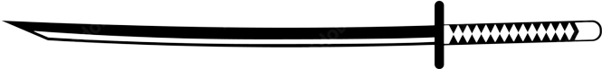

katana.wiki
Contact me via email for collaborations, sponsorships, and to purchase the domain
General
History
Brief: A brief history of the katanaOrigins: Origins and history of the Japanese katanaComplete: The Complete History Of The Japanese Samurai Sword
Glossary
Etymology
Samurai
Samurai: Samurai - WikipediaJapan-Guide: About the samurai, shorter than Wikipedia pageWa-pedia: Organized and text-intensive samurai guideSamurai: Etymology of samurai
Katana influence in Video Games
Terraria: The Katana is a melee weapon that is purchased from the Traveling Merchant.Team Fortress 2: The Half-Zatoichi is a community-created promotional melee weapon for the Soldier and Demoman. It is a katana with a circular cross-guard with rounded notches, adorned with brown grip wrapping.Fallout: The katana is a weapon added with the Fallout: New Vegas add-on Gun Runners' Arsenal.Final Fantasy series: Katana (刀, Katana), also known as ninja swords, dark blades, and knife, is a type of weapon in many Final Fantasy games.Onimusha series: The Raizan (雷斬刀, lit. Thunder Slash Blade) is the lightning-elemental katana that is coupled with the Thunder Orb: Shiden from the Onimusha: Warlords. The first weapon Samanosuke receives, Raizan's magic enables it to unleash close range bursts of lightning energy on a single opponent with each strike.Fire Emblem series: The Killing Edge (Japanese: キルソード Kill Sword) is a sword-type weapon whose main feature is an enhanced critical rate.Devil May Cry series: The Yamato is Vergil's trademark dark-forged katana appearing in Devil May Cry, Devil May Cry 3, Devil May Cry 4 and Devil May Cry 5. It is a legendary sword that was once wielded by his father Sparda, who originally created it alongside the Sparda and Rebellion when the Dark Knight split his power into three pieces, and was named by him to embody a "god of death". It was later left to Vergil as a keepsake.Ghostrunner: Futuristic cyberpunk game featuring high-tech katanas for fast-paced, precision-based combat.Elden Ring: Katanas are a type of Weapon in Elden Ring. Katanas specializes in mid-range combat and are capable of inflicting slash and thrust attacks, as well as the Hemorrhage Status Effect in many cases, which can deal significant damage. Many players choose this weapon type for its unique moveset.Metal Gear Rising: Revengeance: A high-frequency blade was a sword reinforced by a powerful alternating current and resonating at extremely high vibration frequencies.Bayonetta: 修羅刃 Shuraba is a living demonic katana that originally appeared in the first Bayonetta game as part of her arsenal of weapons and can be equipped to the hands' slot. Said to be the twin blade of Angel Slayer, this weapon possesses the power of the demon god of war, Ashura.